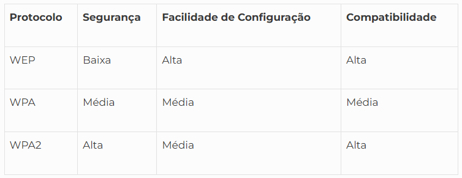

◉ WPA, WPA2 ou WEP: como funciona a segurança do Wi-Fi
Compreender o que é WPA e como saber o tipo de segurança do wi-fi é fundamental para garantir a proteção dos seus
dados, algo indispensável na era digital, em que os ataques cibernéticos estão cada vez mais recorrentes.
Alguns incidentes recentes destacam a necessidade de reforçar a segurança, como foi o caso do Yahoo, que teve 3
bilhões de usuários comprometidos em 2013 devido a uma tentativa de phishing. A Equifax, por outro lado, perdeu
dados pessoais de cerca de 145 milhões de norte-americanos.
Portanto, é crucial aprofundar-se sobre o que é WPA e como funcionam os protocolos WPA e WPA2 para tomar decisões
informadas e proteger adequadamente sua rede wi-fi, resguardando assim seus dados pessoais.
◉ O que é segurança de rede wi-fi?
Para entender a segurança de rede wi-fi, é necessário saber o que são WPA e WPA2, bem como os demais tipos de
protocolos. Essas medidas visam proteger redes sem fio contra ameaças cibernéticas e acessos não autorizados.
Essa segurança é indispensável para evitar ataques de cibercriminosos, que podem roubar dados sensíveis
compartilhados em uma rede, como senhas, e-mails, informações bancárias e outros.
Com o passar dos anos, foram desenvolvidos diferentes protocolos de segurança wi-fi, como WEP, WPA e WPA2,
para fortalecer a proteção das redes. Eles evoluíram para mitigar os riscos causados por ameaças e garantir
níveis maiores de segurança.
◉ Protocolo WEP
O Protocolo WEP, ou Wired Equivalent Privacy, foi a primeira tentativa de proteger redes sem fio, introduzido
em 1997. Ele usa chaves de criptografia de 64 bits ou 128 bits para proteger redes de wi-fi.
No entanto, revelou-se vulnerável ao longo do tempo, sendo considerado menos seguro devido a métodos falhos de
criptografia e suscetibilidade a diversos tipos de ataque. Por isso, protocolos mais robustos, como WPA e WPA2,
foram desenvolvidos.
◉ Protocolo WPA
Devido às falhas de segurança do WEP, o WPA foi desenvolvido para reduzir riscos. O WPA, ou Wi-Fi Protected
Access, possui semelhanças com o WEP, mas oferece melhorias no uso das chaves de segurança e na autorização de
terceiros.
O WPA aumentou a segurança com o uso do TKIP (Temporal Key Integrity Protocol), que altera as chaves durante a
transmissão de dados. Isso significa que, comparado ao WEP, o WPA oferece métodos mais avançados de segurança
e reduz os riscos de acesso não autorizado. Apesar das melhorias, o WPA também apresentou alguns pontos fracos,
levando ao desenvolvimento do WPA2.
◉ Protocolo WPA2
O WPA2, criado em 2004, trouxe um sistema mais robusto de segurança. Ele é baseado no mecanismo de rede RSN
(Robust Security Network) e opera em dois modos: o modo pessoal ou chave pré-compartilhada (WPA2-PSK) e o modo
empresarial (WPA2-EAP).
O WPA2 utiliza o protocolo CCMP, baseado no algoritmo AES (Advanced Encryption Standard), que é mais seguro e
poderoso que o TKIP. Com o tempo, foram descobertas falhas de segurança, como o ataque KRACK, mas o WPA2 foi
desenvolvido para mitigar esses riscos. Portanto, compreender o que é WPA é essencial para a proteção da sua
empresa.
Veja também 8 ferramentas de segurança da informação que sua empresa precisa ter.
◉ Comparação entre WEP, WPA e WPA2
Cada protocolo de segurança de rede wi-fi possui suas particularidades, pois as redes sem fio costumam ser menos
seguras do que as com fio, exigindo maior segurança de rede.

Ao considerar cada um dos protocolos, é evidente que o WEP não é o mais indicado. O WPA, por sua vez, possui
métodos de criptografia mais avançados, mas o WPA2 oferece um nível de segurança mais robusto, implementando
o AES em detrimento do TKIP.
◉ Qual modelo de segurança escolher para a sua rede?
É indispensável considerar o tipo de rede que deseja proteger, seja doméstica ou empresarial. A rede empresarial
necessita de maior segurança para manter os dados devidamente resguardados. Além disso, é necessário conferir
se os equipamentos são compatíveis e quais são as necessidades específicas de segurança.
Para atualizar a rede para WPA2 ou WPA3, primeiro verifique se seus equipamentos são compatíveis. Depois, siga
os passos: nas configurações, abra a aba “Avançado” ou “Configurações Avançadas”, clique em “Rede sem
fio/Wireless”, escolha a opção “Segurança” e troque WPA2 por WPA3-Pessoal.
◉ Futuro da segurança wi-fi: WPA3
O WPA3 representa um avanço significativo na proteção de redes sem fio, trazendo várias melhorias em comparação
com os protocolos anteriores. No entanto, ainda não foi totalmente implementado como o WPA2. Sua transição se
dá pela necessidade de reforçar a segurança e obter uma proteção mais avançada contra ameaças cibernéticas.
Nem todos os hardwares são compatíveis com o WPA3, o que pode exigir atualizações. Um dos principais benefícios
do WPA3 é a proteção offline, que protege contra a adivinhação de senhas.